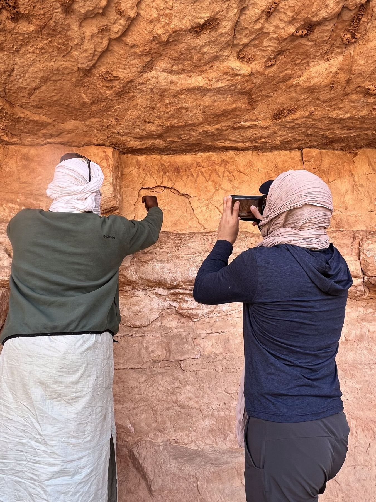
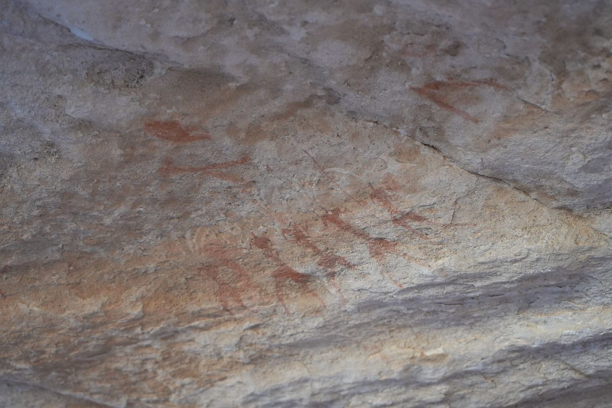
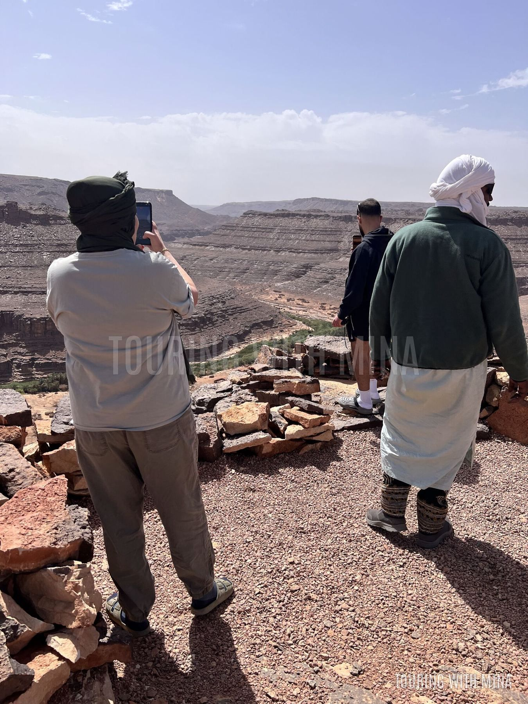
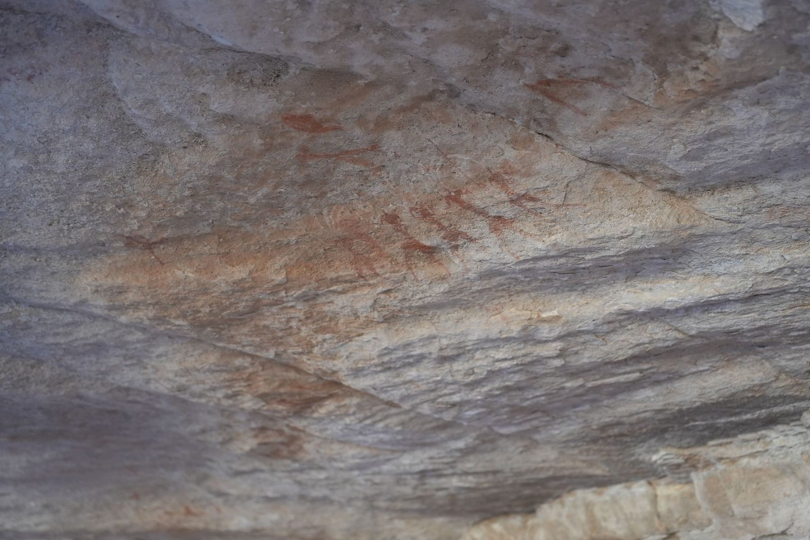
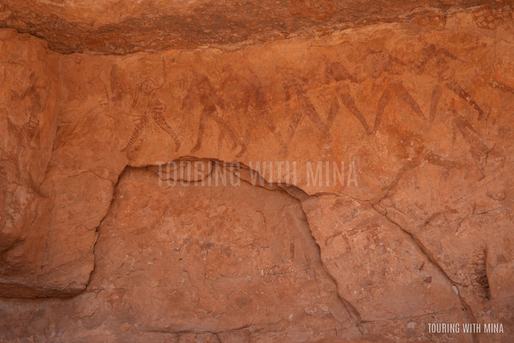
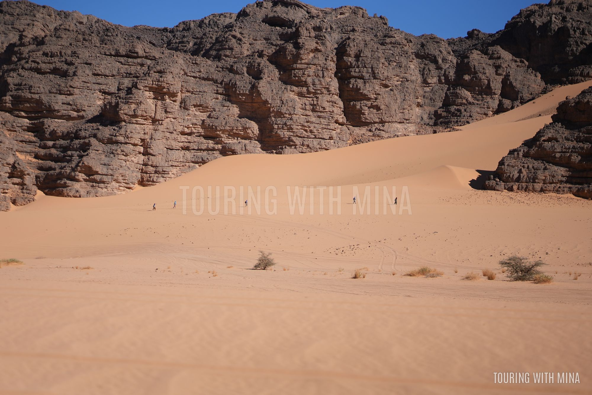
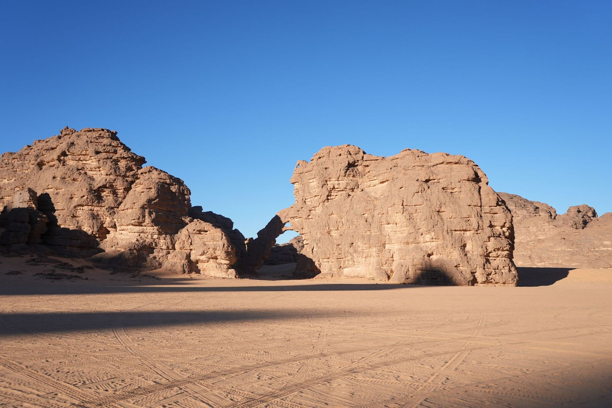
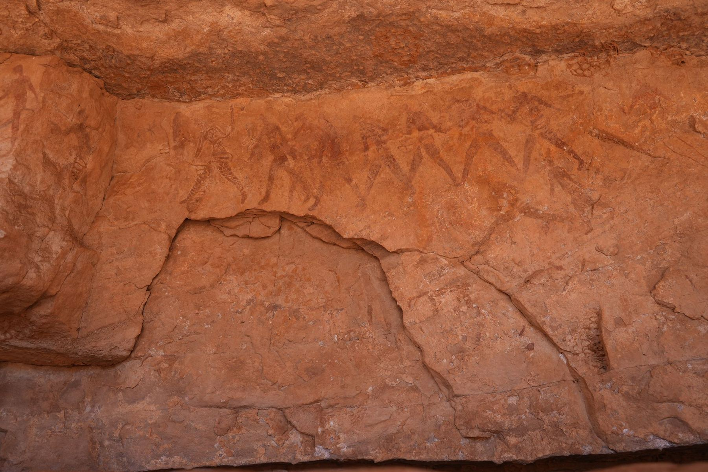
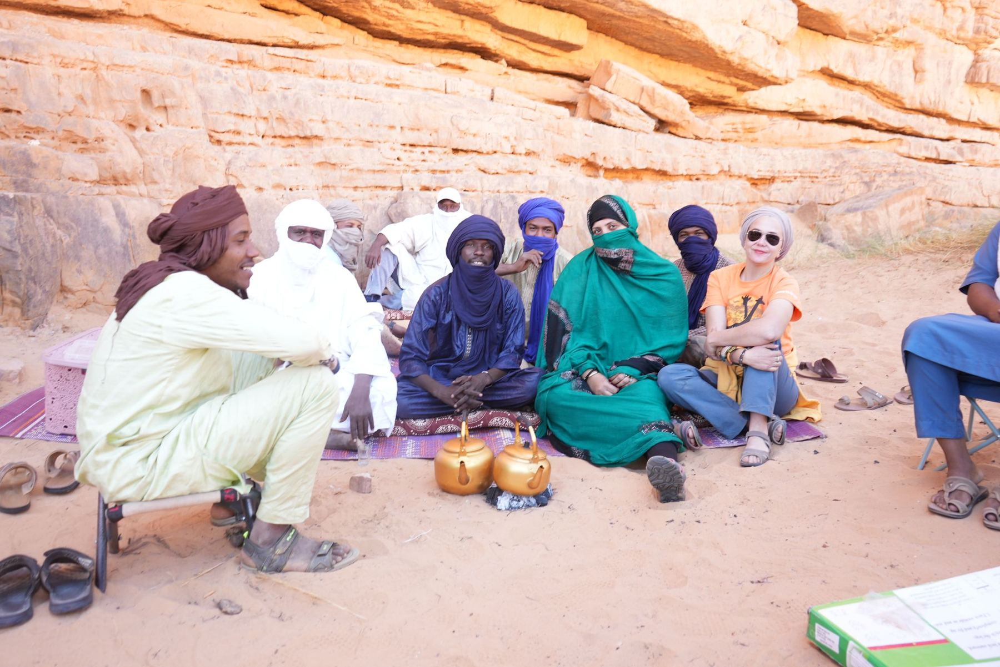

Rock art of the Tassili
More than 15,000 paintings and engravings, left on the rock over nearly 10,000 years. The Sahara's largest open-air museum starts in Djanet.
A history book carved in stone
The Tassili n'Ajjer has been a UNESCO World Heritage site since 1982. On its sandstone walls, the people of the Sahara painted and engraved their world, from around 6000 BC to the first centuries AD.
These images tell of a green Sahara: hippos, giraffes, herds of cattle and hunting scenes, in places where there is now only sand and rock. They also record climate change and how people adapted to it.
With our guides you see them on site, in the rock shelters where they were made, with the stories that go with them.

What the walls tell
Specialists distinguish several main periods, each with its own animals and style.
The hunters
Large wild animals: elephants, giraffes, rhinos, buffalo. Mostly engravings, often very large.
The Round Heads
Painted figures with rounded heads, sometimes huge, in scenes that are still a mystery.
The herders
Herds of cattle and camp life. The period richest in coloured paintings.
The horse
Horses and chariots appear, with stylised figures.
The camel
The Sahara turns dry. The camel arrives, along with the first signs of Tifinagh writing.
On our tours
Photos taken by Mina and our travellers on our trips.







Where to see it with us

The Crying Cow
The region's most famous engraving, at Adayk near Djanet. Included in the 7-day Ihrir tour and the 7-day Red Tadrart tour.
See the tour
The Red Tadrart
In Oued In Djerane, some of the oldest engravings of the Tassili, among the red dunes.
See the tour
Sefar and the plateau
The Tassili plateau trek passes the great frescoes of Sefar, Tin Tazarift, In Tinen and Idjabaren.
See the tourWhy the Sahara
What travellers come to Djanet for, and what they take home.

Silence
Far from cities and screens, the desert offers a calm you no longer find anywhere else. Many travellers say they finally switched off there.

Starry nights
No light for miles: the Milky Way is visible to the naked eye from the camp.

Unique landscapes
Rock forests, arches, red dunes and canyons, shaped by the wind over millions of years.

10,000 years of history
The UNESCO-listed paintings and engravings of the Tassili are part of our tours.

Tuareg hospitality
Tea, music and stories by the fire: you share daily life with the people who know the desert.

A mild winter
From October to April the days are pleasant and the light is beautiful. The right season to go.
Looking without harming
These works have lasted thousands of years. A few simple habits keep them intact.
- Do not touch paintings or engravings: skin oils wear them away.
- Never wet a wall to bring out the colours, it destroys them.
- Take photos without flash and take nothing from the site.
- Stay with the guide: they know the sites and the park rules.
Your journey to Djanet starts with a message
Tell us your dates and wishes. Mina replies personally within 24 hours.